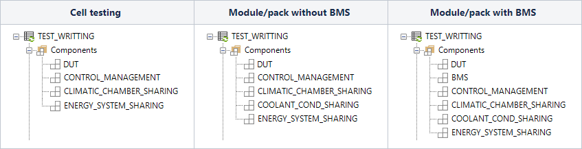
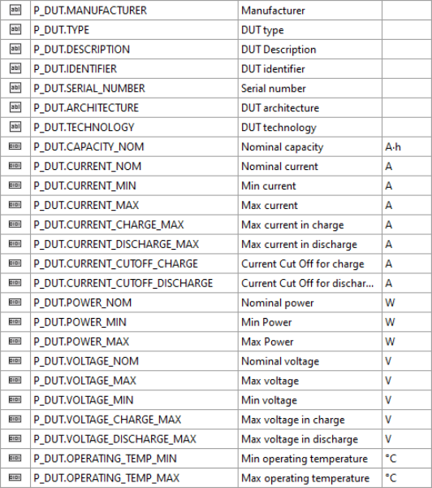

Writing a test
Contenu
Writing a test¶
Basics¶
Selecting components used in a test¶
To be able to access all needed functionnality while writting a test, it is necessary to add the adapted components in the test itself:

Using component Methods to write a test¶
To write a test, it is necessary to use component methods dedicated for that.
In General:
CONTROL_MANAGEMENT is dedicated to apply the requested setpoint to UUT whatever is the configuration and whatever is the physical energy system. Configuration is handled by the MULTIINSTANCE_MANAGEMENT component in the master configuration. CONTROL_MANAGEMENT is linked with the ENERGY_SYSTEM_SHARING
CLIMATIC_CHAMBER_SHARING is dedicated to manage the temperature of the test. It will be synchronize with others instances in regards to the global configuration.
COOLANT_COND_SHARING is dedicated to manage the temperature of the UUT cooling. You can start it, stop it and select the needed setpoint.
Methods to use are as follow;
Using Parameters to write a test¶
Parameters are very important to standardize test configuration and test writing. Use them as much as possible;
To securize a test
To parametrize a test
To fix some limits…
SCALE provides some parameters that you can ‘fixed’ directly in the configuration, or that you can ‘overwritte’ by FlexLab® or others way (see interfacing through file for example). You can also add as many parameter as you want to customize your application!
For example here is the list of UUT standard parameters
